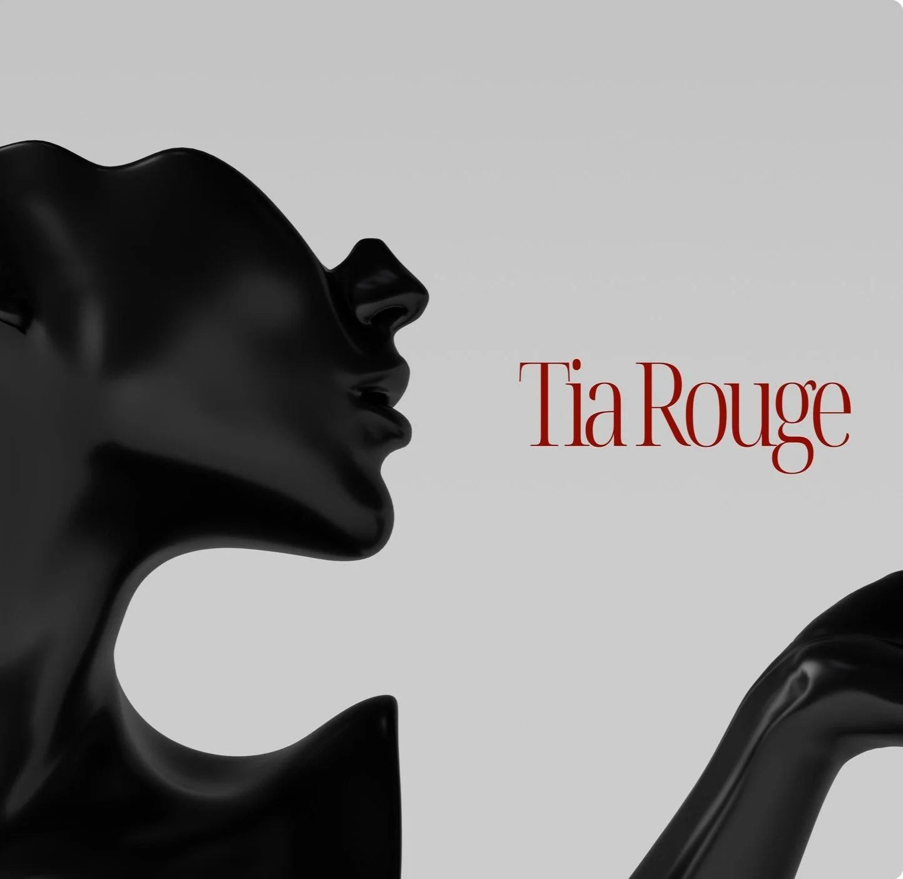

💅 コンセプト・リデザイン案 — Tia Rouge 様への営業提案サンプルです。公式サイトではありません / Concept redesign sample, not the official site
Tia Rouge
EN
日本語

Nails & Lashes — Sydney CBD
ネイル＆まつげ — シドニーCBD
Tia Rouge
Nails, with attitude.
個性を、指先に。
Call to book
電話で予約
Instagram
Menu
メニュー
Nails / Lashes
current designs on Instagram
最新デザインはInstagramにて
Hours
営業時間
Mon–Fri 11–8, Sat 12–7
月〜金 11-20時、土 12-19時
Closed Sun & public holidays
日曜・祝日休業
Visit
アクセス
308/147 King St
Sydney NSW 2000